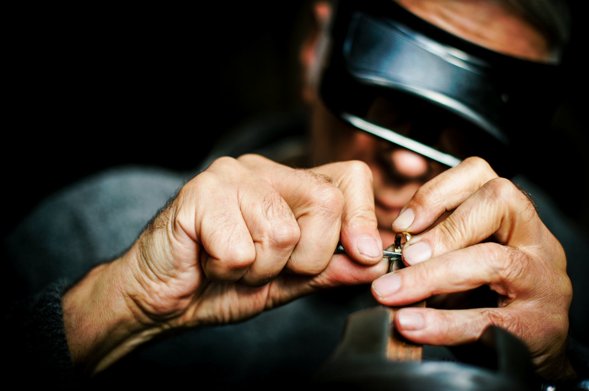
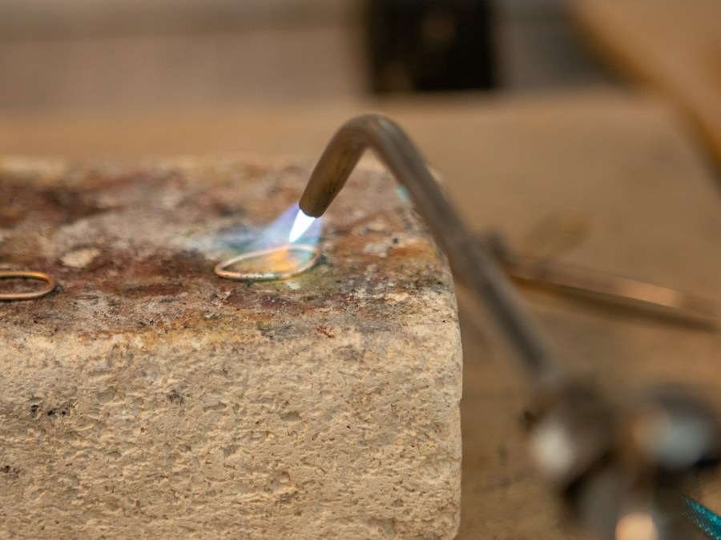
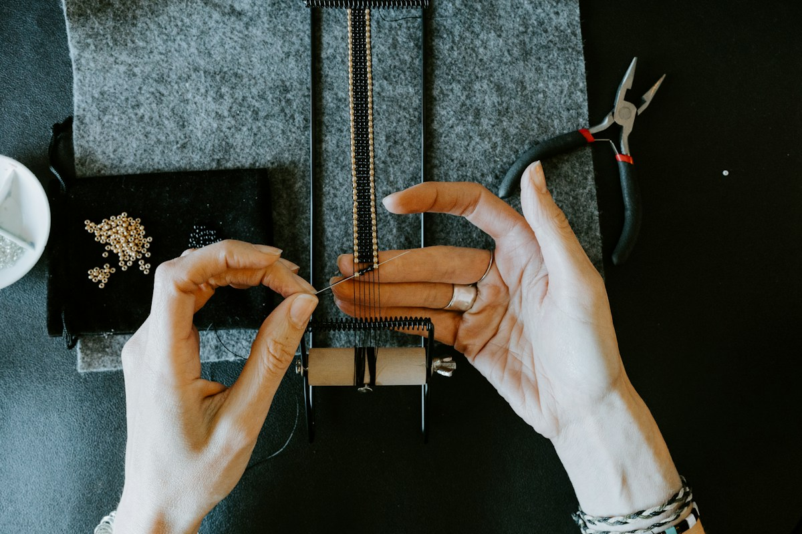
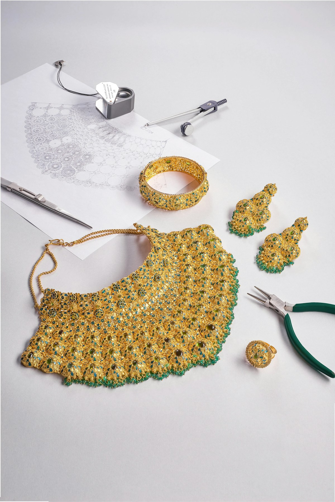

La maison
Un gioiello non nasce da un catalogo. Nasce da un disegno, da un metallo che si scalda, da una pietra scelta a occhio.
Gregory Jewels disegna e costruisce pezzi unici e creazioni su misura. Ogni anello, collana o orecchino passa dalle stesse mani, dal primo bozzetto all'incastonatura.
Come lavoriamo


Atelier
La fiamma, poi la pazienza.
Fusione, saldatura, limatura, incastonatura. Pochi gesti, ripetuti finché il pezzo smette di sembrare lavorato e comincia a sembrare inevitabile.



Il tempo che serve, non quello che avanza.

Journal
«Dare una forma a ciò che si ricorda: un giorno, una persona, un luogo.»
Cerchiamo l'equilibrio tra le linee classiche e un disegno più netto, contemporaneo. Pochi materiali, scelti con rigore, lavorati senza fretta.
Pezzi scelti

